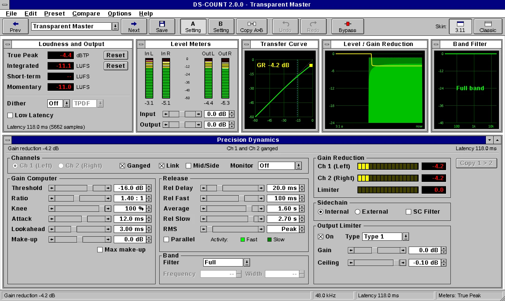
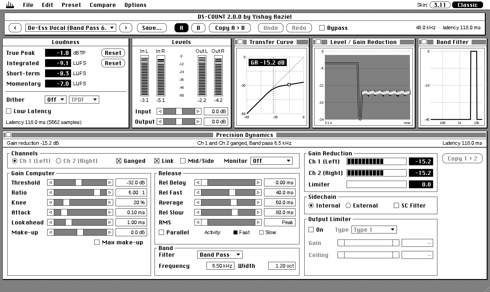

DS-COUNT
by Yishay Raziel version 2.0.1
Two-channel mastering dynamics. Band de-essing, dual release, look-ahead and a true-peak limiter, in a window you already know how to use.
VST3, AU and Standalone. Mac (signed and notarized) and Windows.

The 1993 Commercial
Thirty seconds from a year that wasn't ready for it. Every screen in the film is the real plugin, processing real audio. The soundtrack was mastered through DS-COUNT itself.
Gain Computer
Threshold, ratio from 1:5 upward expansion to 1000:1 limiting, soft knee, make-up or automatic make-up.
Dual Release
Fast release for the transients, slow release for the body, an average that decides between them, and a release delay.
Look-Ahead
Up to 63 ms. The gain is already moving when the peak arrives. Peak or RMS detection.
Band
Full, Low Pass, Band Pass or High Pass, linear phase. Only the band is turned down: de-essing, bass control, cymbal taming.
Two Channels
Left/Right or Mid/Side, ganged or independent, linked sidechain, external sidechain, parallel mode.
Output
Limiter (Safe, Type 1, Type 2 true peak), true-peak meters, BS.1770 loudness, dither 16/20/24 bit with three noise shapes.
Also
A/B compare, undo and redo, 37 factory presets, user presets, bit-exact bypass that keeps the latency, Low Latency mode (6.3 ms), a window you can size from 60 to 158 % (Options > Size, or the maximise box).
- Mastering
- Transparent Master
- Gentle Glue
- Loud Master
- Streaming Ready (-1 dBTP)
- Mid/Side Mastering
- Bass Control
- Bass Boost
- Neutral M/S Unlinked
- Neutral Stereo Linked Ganged
- Compression
- Compressor Gentle
- Compressor Anti-Distortion Trumpet
- Dual Compressor Vox
- Parallel Drum Compression
- Parallel Comp Transparent
- Parallel Comp Tonalisation
- Parallel Comp Tonal Presence
- Parallel Comp Tonal Warmth
- Expansion
- Upward Dynamics Restoration
- Dual Expander Vox
- Upward Expansion Bass Drum
- Upward Expansion High Pass
- Upward Expansion Warming
- Upward Expansion Wide Band
- De-Essing
- De-Ess Vocal (Band Pass 6.5 kHz)
- De-Ess Bright Vocal (High Pass 7 kHz)
- De-Ess Low Sibilance (Band Pass 5 kHz)
- De-Ess Mix Bus (Mid only, 7.5 kHz)
- De-Ess Vocal Hard
- De-Ess Vocal Soft
- De-Ess Vocal Hard M/S
- De-Ess Vocal Soft M/S
- De-Ess Hi Hat Hard
- De-Ess Hi Hat Soft
- Cymbal Tamer (High Pass 9 kHz)
- Limiting
- Limiter Soft
- Limiter Mid
- Limiter Hard
Pick the desktop you grew up on. "3.11" is sixteen colours and bevelled buttons; "Classic" is one bit, black on white. Both have an optional old-screen filter: scan lines and phosphor glow, no curved glass. The choice is remembered for every instance. Try it on this page: Options > Skin.

| Mac | macOS 12 or later, Apple Silicon or Intel. VST3, AU, Standalone. Signed and notarized. |
|---|---|
| Windows | Windows 10 or 11, 64-bit. VST3, Standalone. |
| Rates | 44.1 to 192 kHz, mono or stereo |
| Engine | 64-bit floating point inside |
| Latency | 118 ms; 6.3 ms in Low Latency mode |
| Sidechain | Optional external stereo input |
DS-COUNT 2.0.1 is ready to install. Choose your computer:
Mac
- Open the .dmg.
- Run the DS-COUNT installer (.pkg).
- Rescan plug-ins in your DAW.
Plug-ins go to /Library/Audio/Plug-Ins, the app to Applications.
Windows
- Run the Setup .exe.
- If Windows says "Windows protected your PC", click More info, then Run anyway.
- Rescan plug-ins in your DAW.
The VST3 goes to Common Files\VST3.